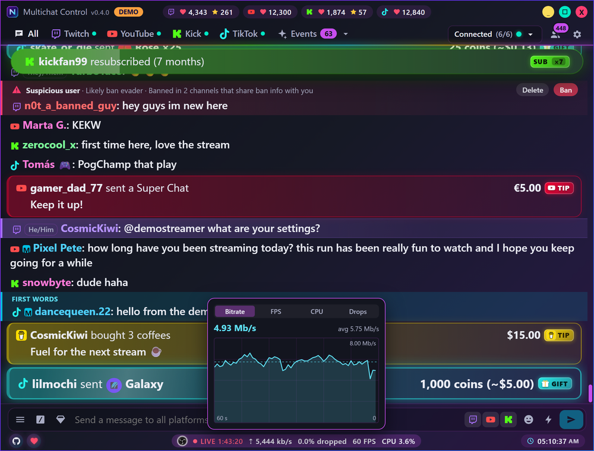

MultichatControl
NoName's Multichat Control
Read and write Twitch, YouTube and Kick chat together, read TikTok LIVE next to them, see every event as it happens, and run channel actions in one click. A free, open-source Windows app for streamers who go live on several platforms at once.
⬇️ Download for Windows 🧭 How to startLatest version: 0.5.2

Shown in demo mode, with invented chatters.
What it does
💬 One merged chat
Twitch, YouTube, Kick and TikTok together, with a tab for each. Messages that tag you are highlighted in their platform's colour. Point at a message to reply, copy, ignore or highlight someone, and choose exactly where each message goes.⚡ Every event
Subscriptions, memberships, Super Chats, TikTok gifts with their coin value, raids, redemptions, follows, donations in one list, with the supporter's message, and as pop-ups above the message box. Log in to StreamElements or Streamlabs to add your tips and the last 30 days of support. YouTube videos and clips posted in chat get a preview.🛡️ Moderation
Delete messages, time out or ban on every platform, in one click. Allow or deny the messages Twitch's AutoMod holds, and spot suspicious users and "buy followers" spam bots.🎨 Made for live
Live stream stats with a graph (OBS Studio, Streamlabs Desktop or Meld Studio) and a clock under the message box, fifteen colour skins (four of them light), an emote picker, and a wobbly window if you like.⬇️ Download
Multichat Control for Windows
- 📦 One file, nothing to install
- 🔄 Updates itself
- 🔓 Free and open source
- 🔒 Your logins stay on your PC
Looking for older versions or the source code? Everything is on GitHub.
🧭 Getting started, step by step
No GitHub account and no technical knowledge needed. It takes about two minutes.
-
⬇️ Download the app
Click Download Multichat Control above. Your browser saves one file,
Multichat-Control-…-portable.exe, usually in your Downloads folder.💡 If your browser says the file isn't commonly downloaded, open the download list, click the … next to the file and choose Keep.
-
📁 Give it its own folder
Create a new folder, for example Documents → Multichat Control, and move the file into it. The app keeps your settings in a
user-datafolder next to itself, so a folder of its own keeps everything tidy. -
▶️ Open it
Double-click the file. The first time, Windows may show a blue "Windows protected your PC" box, because small free apps like this one aren't signed with a paid certificate. Click More info, then Run anyway. Windows only asks once.
-
🔑 Log in to your platforms
Settings open on the first start. Under Connections, click Log in next to Twitch, YouTube and Kick. Each one opens that platform's own login page, so the app never sees your password. For TikTok, type your @username and paste a free Euler Stream key; there's no TikTok login at all.
💡 For YouTube, Google shows "Google hasn't verified this app". That's expected: click Advanced, then Go to MultichatControl.
-
🎥 Optional: stream stats
To see your bitrate, dropped frames and FPS under the message box, pick your streaming app in Settings → Connections → Streaming app and follow the steps there. In OBS, go to Tools → WebSocket Server Settings and tick Enable WebSocket server. In Streamlabs Desktop, open Settings → Mobile, turn on Allow third party connections and copy its API token. Meld Studio needs nothing.
-
🤖 Optional: Streamer.bot
Already using Streamer.bot? Run its actions and commands right from the message box. In Streamer.bot, open Servers/Clients → WebSocket Server, tick Auto Start and click Start Server. Then turn on Settings → Connections → Streamer.bot → Use Streamer.bot in the app. If you set a password in Streamer.bot, paste it there too.
-
💸 Optional: StreamElements or Streamlabs
Pick yours in Settings → Connections → Alerts & Donations and click Log in. A window opens on the service's own website: sign in to your own account, for example with Login with Twitch. The window closes by itself once everything works, and your tips plus the last 30 days of subs, gifts, cheers and raids show up in Events.
-
🎉 You're ready
Go live and chat with everyone in one window. When a new version comes out, the app tells you and updates itself in one click. Pick a skin you like in Settings → Appearance.
How MultichatControl uses YouTube
To show your YouTube live chat and let you take part in it, the app asks you to log in with your Google account. It uses that permission only to:
- find your channel's current live stream and its live chat
- read the live chat messages
- send the messages you write
- delete messages, and time out or ban chat participants, when you choose to
Your login stays on your own computer, and nothing is sent to us. The app never touches your videos, comments, captions or ratings. Read the full Privacy Policy.
☕ Support the project
MultichatControl is free and open source, and it always will be. It's built in my spare time, so if it makes your streams easier, you can help keep it going:

GitHub sponsors appear on the Wall of Supporters inside the app. No GitHub account? You can make one in seconds with Continue with Google. Donations are optional, and everyone gets the same features. Sharing the app, reporting bugs or suggesting features helps just as much. ❤️
Contact
Questions or problems: nnfisfree@gmail.com, or open an issue on GitHub.